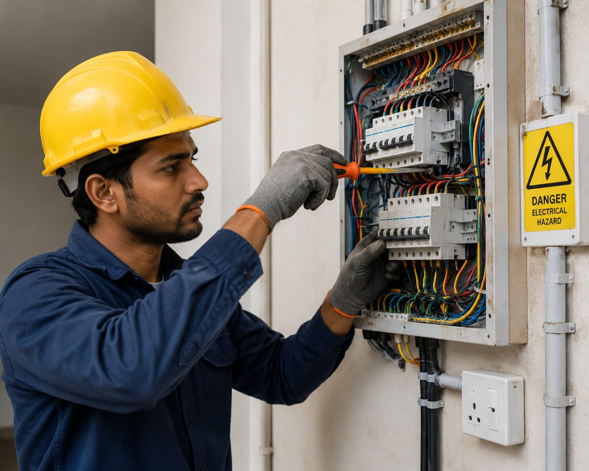

- Imagine you are building a new house or office.
- You need proper electrical wiring, switches, lights, fans, and power connections.
- Someone should carefully install and repair all the electrical systems safely.
- That person is called an Electrician.
- 👉 In simple words: Electricians install, maintain, and repair electrical wiring and power systems.
Electrician
🧑🎨 What Do They Do?

🎓 How to Become an Electrician
These Electrician programs help students learn electrical wiring, circuit connections, power systems, electrical safety, and installation skills.
ITI in Electrician (NCVT/SCVT)
Duration: 2 Years (4 Semesters)
Eligibility: 10th Pass with Science and Mathematics
Entrance Exam: State ITI Merit selection / Delhi CET
Diploma in Electrical Engineering (Polytechnic)
Duration: 3 Years
Eligibility: 10th Pass with Science and Mathematics
Entrance Exam: State Polytechnic Entrance Exams
📝 Exam Details
(Click on the exam name to see full details)
State ITI Selection State Polytechnic Entrance ExamsNote: Electrician programs include classroom learning, workshop practice, electrical wiring training, safety procedures, and practical electrical work.
These advanced Electrical programs help students learn electrical systems, industrial automation, electrical design, maintenance, and advanced power technologies.
B.Voc (Bachelor of Vocation) in Electrical Skills / Electrical Infrastructure
Duration: 3 Years
Eligibility: 12th Pass from any stream
Entrance Exam: CUET UG or Institute-Level Admission
Advanced Diploma in Electrical Maintenance and Automation
Duration: 1 Year
Eligibility: 12th Pass or ITI Certificate
Entrance Exam: Merit-Based Admission
Note: Advanced Electrical programs include industrial training, automation systems, electrical design software, maintenance techniques, and practical electrical projects.
These certification programs help students learn practical electrical work, wiring systems, electrical drafting, and modern electrical design skills.
Domestic Electrician Certification (NSQF Level 3/4)
Duration: 3 – 4 Months (Approx. 400–500 Hours)
Eligibility: 8th or 10th Pass
Provider: National Skill Development Corporation (NSDC) / Power Sector Skill Council (PSSC)
Certificate in Electrical Drafting, Estimation and Design
Duration: 1 – 2 Months
Eligibility: 10+2 Pass or Civil/Electrical Diploma holders
Provider: CADD Centre Training Services / Specialized MEP Training Institutes
Note: These certification courses mainly focus on practical electrical skills and industry-based training.
Note:
(Age limits, marks, and admission process may vary depending on the college or state. These courses are available in many colleges and universities across India. You can choose colleges based on your location, budget, and entrance exams.)
🏛️ Top Colleges & Institutes for Electrician Courses in India
(Tap on a college to view details)
After 10th (ITI & Polytechnic)
Government Industrial Training Institute (ITI), Pusa (New Delhi) Government Industrial Training Institute (ITI), Aundh (Pune) Government Industrial Training Institute (ITI), Gujarat Government Polytechnic, Mumbai Government Polytechnic, HyderabadSTEP 1
Imagine you are working as an Electrician.
STEP 2
You install lights, fans, switches, and electrical wiring in homes and buildings.
STEP 3
You repair electrical problems and power connections.
STEP 4
You use tools and electrical equipment carefully and safely.
STEP 5
You help people get safe electricity connections in their homes and workplaces.
STEP 6
If working with electrical systems and solving technical problems excites you, this career may suit you.
🏠
Homes & Apartments
Install and repair lights, fans, switches, and electrical wiring systems.
🏢
Commercial Buildings
Work on electrical systems in offices, malls, and large buildings.
🏗️
Construction Sites
Install electrical wiring and power systems in new buildings.
🏭
Factories & Industries
Maintain machines, motors, and industrial electrical equipment.
⚡
Power & Electrical Companies
Help maintain electricity supply systems and electrical networks.
🧰
Self-Employment
Start your own electrical service business and work independently.
🏨
Hotels & Hospitals
Maintain electrical systems and safety equipment in large facilities.
✈️
Abroad Opportunities
Work in construction, maintenance, and electrical companies in different countries.
(Click Yes or No for each question)
1. Have you ever thought about fixing electrical things in your home?
2. Do you like repairing work?
3. Are you interested in learning how electrical work is done in homes or buildings?
4. Do you like work that involves identifying problems and fixing them?
5. Imagine a family building a new house. You help install lights, fans, switches, and electrical wiring for the entire home. Does this excite you?